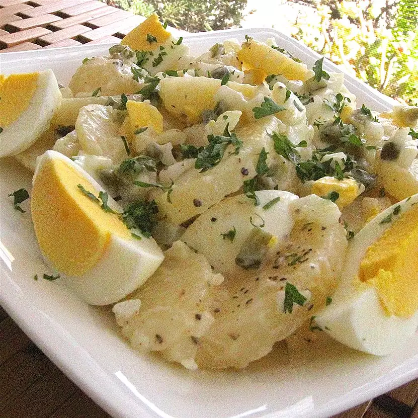

Potatoes Salads

Discription
potatoes salads with eggs,gherkins and creamy salad dressing
Ingredients
- 5 potatoes
- 2 tablespoons vinegar
- 1/2 teaspoon white sugar
- salt and ground black pepper to taste
- 1 onion, finely chopped
- 2 tablespoons pickled gherkins, chopped
- 1/4 cup creamy salad dressing
- 4 hard boiled eggs, cut into wedges, divided
- 2 tablespoons chopped fresh parsley, or as desired
Steps
- Place potatoes into a large pot and cover with salted water; bring to a boil.Reduce heat to medium-low and simmer until tender about 20 minutes;drain and rinse with cold water to cool.Remove and discard potato skins.Slice potatoes.
- Whisk vinger,sugar,salt and pepper together in a large bowl;add potatoes,onion and chopped gherkin.Stir salad dressing garnish with the remaining eggs wedges and parsley.cover bowl with plastic wrap and refrigerate 1 hour before serving.